Show code
# Setup ------------------------------------------------------------------------
# Takes off from cell selection
library(SingleCellExperiment)
library(here)
library(cowplot)
sce <- readRDS(here("data/SCEs/C057_Cooney.cells_selected.SCE.rds"))
# data frames containing co-ordinates and factors for creating reduced
# dimensionality plots.
umap_df <- cbind(
data.frame(
x = reducedDim(sce, "UMAP")[, 1],
y = reducedDim(sce, "UMAP")[, 2]),
as.data.frame(colData(sce)[, !colnames(colData(sce)) %in% c("TRA", "TRB")]))
# Some useful colours
sample_colours <- setNames(
unique(sce$sample_colours),
unique(names(sce$sample_colours)))
treatment_colours <- setNames(
unique(sce$treatment_colours),
unique(names(sce$treatment_colours)))
cluster_colours <- setNames(
unique(sce$cluster_colours),
unique(names(sce$cluster_colours)))
# Some useful gene sets
mito_set <- rownames(sce)[which(rowData(sce)$CHR == "MT")]
ribo_set <- grep("^RP(S|L)", rownames(sce), value = TRUE)
# NOTE: A more curated approach for identifying ribosomal protein genes
# (https://github.com/Bioconductor/OrchestratingSingleCellAnalysis-base/blob/ae201bf26e3e4fa82d9165d8abf4f4dc4b8e5a68/feature-selection.Rmd#L376-L380)
library(msigdbr)
c2_sets <- msigdbr(species = "Homo sapiens", category = "C2")
ribo_set <- union(
ribo_set,
c2_sets[c2_sets$gs_name == "KEGG_RIBOSOME", ]$human_gene_symbol)
library(scran)
set.seed(1000)
var_fit <- modelGeneVarByPoisson(sce, block = sce$batch)
hvg <- getTopHVGs(var_fit, var.threshold = 0)
is_mito <- hvg %in% mito_set
is_ribo <- hvg %in% ribo_set
hvg <- hvg[!(is_mito | is_ribo)]
set.seed(1010)
var_fit.sample <- modelGeneVarByPoisson(sce, block = sce$Sample)
hvg.sample <- getTopHVGs(var_fit.sample, var.threshold = 0)
is_mito <- hvg.sample %in% mito_set
is_ribo <- hvg.sample %in% ribo_set
hvg.sample <- hvg.sample[!(is_mito | is_ribo)]
# Re-process original data -----------------------------------------------------
library(scater)
# NOTE: This is a no-op if the same hvg set is used from cell selection.
set.seed(11235)
sce <- denoisePCA(sce, var_fit, subset.row = hvg)
set.seed(8875)
sce <- runUMAP(sce, dimred = "PCA")
umap_df <- cbind(
data.frame(
x = reducedDim(sce, "UMAP")[, 1],
y = reducedDim(sce, "UMAP")[, 2]),
as.data.frame(colData(sce)[, !colnames(colData(sce)) %in% c("TRA", "TRB")]))
set.seed(8111)
snn_gr <- buildSNNGraph(sce, use.dimred = "PCA")
clusters <- igraph::cluster_louvain(snn_gr)
sce$cluster <- factor(clusters$membership)
umap_df$cluster <- sce$cluster
cluster_colours <- setNames(
Polychrome::glasbey.colors(nlevels(sce$cluster) + 1)[-1],
levels(sce$cluster))
sce$cluster_colours <- cluster_colours[sce$cluster]
# Diagnosing batch effects -----------------------------------------------------
# Samples were collected in a single capture, but there are some strong
# differences between Venetoclax and Control samples.
library(patchwork)
# Some clusters are highly treatment specific (just another way of showing
# what is shown in the plots at the end of 'cell selection').
table(cluster = sce$cluster, treatment = sce$Treatment)
treatment
cluster Infected Uninfected
1 141 1248
2 1651 66
3 86 18
4 173 379
5 37 816
6 13 291
7 133 856
8 724 671
9 71 840
10 827 90
Show code
uncorrected.p1 <- plotUMAP(sce, colour_by = "Treatment", point_size = 0.5) +
scale_colour_manual(values = treatment_colours, name = "Treatment") +
ggtitle("Uncorrected")
uncorrected.p2 <- plotUMAP(sce, colour_by = "cluster", point_size = 0.5) +
scale_colour_manual(values = cluster_colours, name = "cluster") +
ggtitle("Uncorrected")
uncorrected.p1 + uncorrected.p2
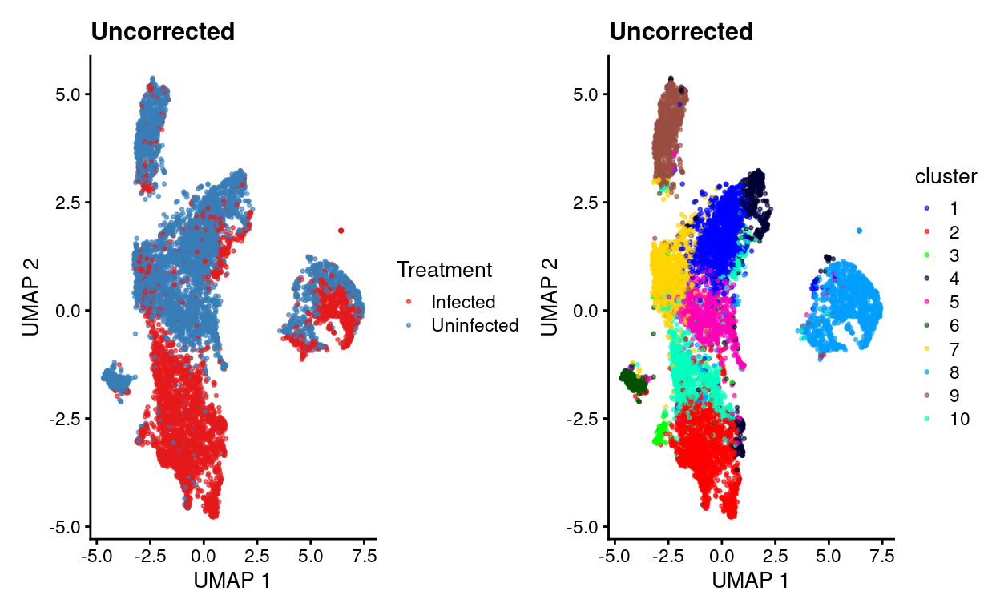
Show code
plot_grid(
ggplot(as.data.frame(colData(sce)[, c("cluster", "Sample")])) +
geom_bar(
aes(x = cluster, fill = Sample),
position = position_fill(reverse = TRUE)) +
coord_flip() +
ylab("Frequency") +
scale_fill_manual(values = sample_colours) +
theme_cowplot(font_size = 8),
ggplot(as.data.frame(colData(sce)[, c("cluster", "Treatment")])) +
geom_bar(
aes(x = cluster, fill = Treatment),
position = position_fill(reverse = TRUE)) +
coord_flip() +
ylab("Frequency") +
scale_fill_manual(values = treatment_colours) +
theme_cowplot(font_size = 8),
ggplot(as.data.frame(colData(sce)[, "cluster", drop = FALSE])) +
geom_bar(aes(x = cluster, fill = cluster)) +
coord_flip() +
ylab("Number of droplets") +
scale_fill_manual(values = cluster_colours) +
theme_cowplot(font_size = 8) +
guides(fill = FALSE),
align = "h",
ncol = 3)
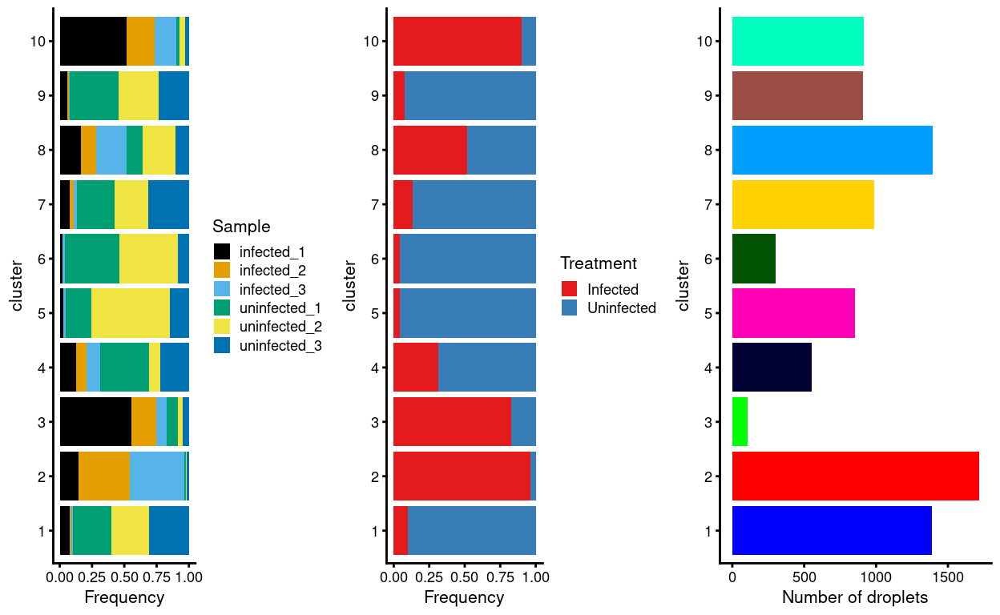
Show code
# Linear regression with rescaleBatches() --------------------------------------
library(batchelor)
rescaled <- rescaleBatches(sce, batch = sce$Treatment)
library(scran)
set.seed(666)
rescaled <- denoisePCA(
rescaled,
var_fit,
subset.row = hvg,
assay.type = "corrected")
snn.gr <- buildSNNGraph(rescaled, use.dimred="PCA")
clusters.resc <- igraph::cluster_louvain(snn.gr)$membership
table(cluster=clusters.resc, treatment=rescaled$batch)
treatment
cluster Infected Uninfected
1 98 30
2 942 264
3 868 1004
4 12 223
5 189 450
6 76 735
7 687 672
8 89 295
9 579 1264
10 316 338
Show code
rescaled <- runUMAP(rescaled, dimred="PCA")
rescaled$batch <- factor(rescaled$batch)
rescaled$cluster <- factor(clusters.resc)
rescaled.p1 <- plotUMAP(rescaled, colour_by = "batch", point_size = 0.5) +
scale_colour_manual(values = treatment_colours, name = "Treatment") +
ggtitle("Rescaled")
rescaled.p2 <- plotUMAP(rescaled, colour_by = "cluster", point_size = 0.5) +
ggtitle("Rescaled")
rescaled.p1 + rescaled.p2
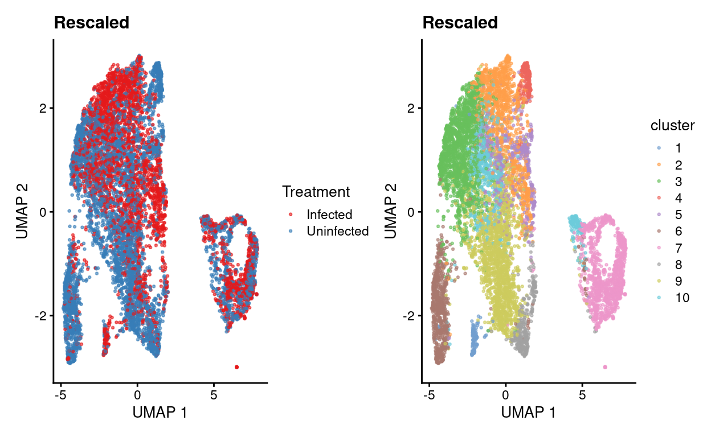
Show code
plot_grid(
ggplot(as.data.frame(
cbind(
colData(sce)[, "Sample", drop = FALSE],
colData(rescaled)[, "cluster", drop = FALSE]))) +
geom_bar(
aes(x = cluster, fill = Sample),
position = position_fill(reverse = TRUE)) +
coord_flip() +
ylab("Frequency") +
scale_fill_manual(values = sample_colours) +
theme_cowplot(font_size = 8),
ggplot(as.data.frame(
cbind(
colData(sce)[, "Treatment", drop = FALSE],
colData(rescaled)[, "cluster", drop = FALSE]))) +
geom_bar(
aes(x = cluster, fill = Treatment),
position = position_fill(reverse = TRUE)) +
coord_flip() +
ylab("Frequency") +
scale_fill_manual(values = treatment_colours) +
theme_cowplot(font_size = 8),
ggplot(as.data.frame(colData(rescaled)[, "cluster", drop = FALSE])) +
geom_bar(aes(x = cluster, fill = cluster)) +
coord_flip() +
ylab("Number of droplets") +
theme_cowplot(font_size = 8) +
guides(fill = FALSE),
align = "h",
ncol = 3)

Show code
# Linear regression with regressBatches() --------------------------------------
set.seed(10001)
residuals <- regressBatches(sce, batch = sce$Treatment, d = 50,
subset.row=hvg, correct.all=TRUE)
snn.gr <- buildSNNGraph(residuals, use.dimred="corrected")
clusters.resid <- igraph::cluster_louvain(snn.gr)$membership
table(Cluster=clusters.resid, treatment=residuals$batch)
treatment
Cluster Infected Uninfected
1 519 1168
2 19 254
3 191 380
4 92 817
5 195 814
6 249 7
7 1031 223
8 740 884
9 91 28
10 729 700
Show code
residuals <- runUMAP(residuals, dimred="corrected")
residuals$batch <- factor(residuals$batch)
residuals$cluster <- factor(clusters.resid)
residuals.p1 <- plotUMAP(residuals, colour_by = "batch", point_size = 0.5) +
scale_colour_manual(values = treatment_colours, name = "Treatment") +
ggtitle("Residuals")
residuals.p2 <- plotUMAP(residuals, colour_by = "cluster", point_size = 0.5) +
ggtitle("Residuals")
residuals.p1 + residuals.p2
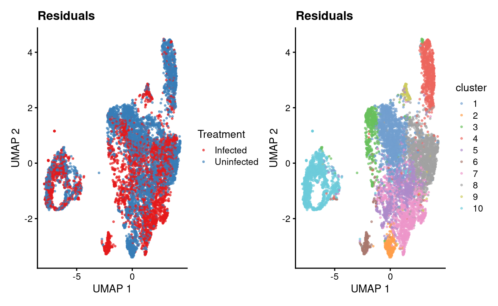
Show code
plot_grid(
ggplot(as.data.frame(
cbind(
colData(sce)[, "Sample", drop = FALSE],
colData(residuals)[, "cluster", drop = FALSE]))) +
geom_bar(
aes(x = cluster, fill = Sample),
position = position_fill(reverse = TRUE)) +
coord_flip() +
ylab("Frequency") +
scale_fill_manual(values = sample_colours) +
theme_cowplot(font_size = 8),
ggplot(as.data.frame(
cbind(
colData(sce)[, "Treatment", drop = FALSE],
colData(residuals)[, "cluster", drop = FALSE]))) +
geom_bar(
aes(x = cluster, fill = Treatment),
position = position_fill(reverse = TRUE)) +
coord_flip() +
ylab("Frequency") +
scale_fill_manual(values = treatment_colours) +
theme_cowplot(font_size = 8),
ggplot(as.data.frame(colData(residuals)[, "cluster", drop = FALSE])) +
geom_bar(aes(x = cluster, fill = cluster)) +
coord_flip() +
ylab("Number of droplets") +
theme_cowplot(font_size = 8) +
guides(fill = FALSE),
align = "h",
ncol = 3)

Show code
# MNN by treatment -------------------------------------------------------------
set.seed(1000101001)
mnn_treatment.out <- fastMNN(sce, batch = sce$Treatment, d=50, k=20, subset.row=hvg)
snn.gr <- buildSNNGraph(mnn_treatment.out, use.dimred="corrected")
clusters.mnn_treatment <- igraph::cluster_louvain(snn.gr)$membership
table(Cluster=clusters.mnn_treatment, treatment=mnn_treatment.out$batch)
treatment
Cluster Infected Uninfected
1 341 1245
2 270 308
3 327 802
4 110 336
5 239 4
6 710 679
7 67 28
8 521 572
9 1179 577
10 92 724
Show code
mnn_treatment.out <- runUMAP(mnn_treatment.out, dimred="corrected")
mnn_treatment.out$batch <- factor(mnn_treatment.out$batch)
mnn_treatment.out$cluster <- factor(clusters.mnn_treatment)
mnn_treatment.p1 <- plotUMAP(mnn_treatment.out, colour_by = "batch", point_size = 0.5) +
scale_colour_manual(values = treatment_colours, name = "Treatment") +
ggtitle("MNN (treatment)")
mnn_treatment.p2 <- plotUMAP(mnn_treatment.out, colour_by = "cluster", point_size = 0.5) +
ggtitle("MNN (treatment)")
mnn_treatment.p1 + mnn_treatment.p2
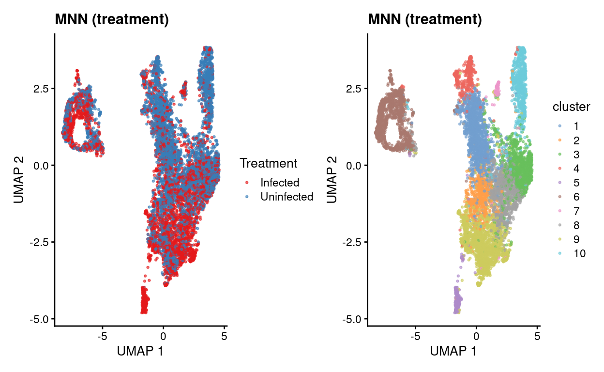
Show code
metadata(mnn_treatment.out)$merge.info$lost.var
Infected Uninfected
[1,] 0.02292624 0.0100355
Show code
plot_grid(
ggplot(as.data.frame(
cbind(
colData(sce)[, "Sample", drop = FALSE],
colData(mnn_treatment.out)[, "cluster", drop = FALSE]))) +
geom_bar(
aes(x = cluster, fill = Sample),
position = position_fill(reverse = TRUE)) +
coord_flip() +
ylab("Frequency") +
scale_fill_manual(values = sample_colours) +
theme_cowplot(font_size = 8),
ggplot(as.data.frame(
cbind(
colData(sce)[, "Treatment", drop = FALSE],
colData(mnn_treatment.out)[, "cluster", drop = FALSE]))) +
geom_bar(
aes(x = cluster, fill = Treatment),
position = position_fill(reverse = TRUE)) +
coord_flip() +
ylab("Frequency") +
scale_fill_manual(values = treatment_colours) +
theme_cowplot(font_size = 8),
ggplot(as.data.frame(colData(mnn_treatment.out)[, "cluster", drop = FALSE])) +
geom_bar(aes(x = cluster, fill = cluster)) +
coord_flip() +
ylab("Number of droplets") +
theme_cowplot(font_size = 8) +
guides(fill = FALSE),
align = "h",
ncol = 3)
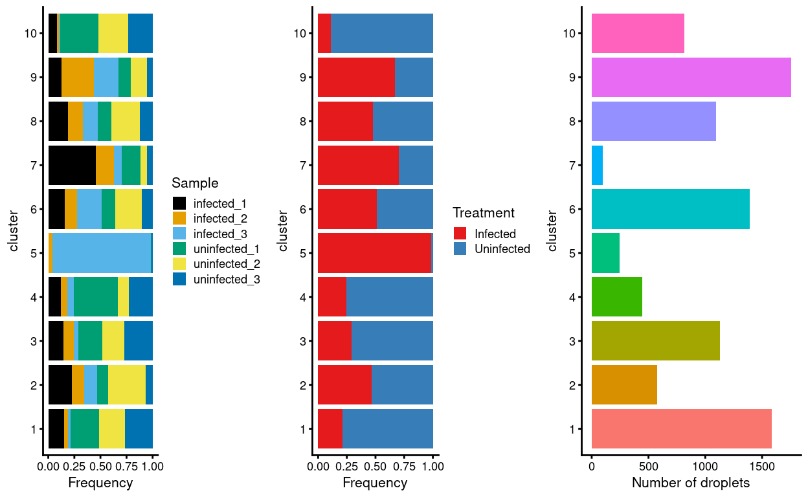
Show code
# MNN by sample -----------------------------------------------------------------
set.seed(1000101001)
mnn_sample.out <- fastMNN(sce, batch = sce$Sample, d=50, k=20, subset.row=hvg.sample)
snn.gr <- buildSNNGraph(mnn_sample.out, use.dimred="corrected")
clusters.mnn_sample <- igraph::cluster_louvain(snn.gr)$membership
table(Cluster=clusters.mnn_sample, treatment=mnn_sample.out$batch)
treatment
Cluster infected_1 infected_2 infected_3 uninfected_1 uninfected_2
1 205 366 383 202 254
2 281 260 182 378 406
3 208 164 327 181 348
4 60 16 9 280 226
5 193 166 207 116 299
6 169 132 171 242 132
7 231 71 55 390 387
treatment
Cluster uninfected_3
1 98
2 359
3 140
4 196
5 93
6 132
7 416
Show code
mnn_sample.out <- runUMAP(mnn_sample.out, dimred="corrected")
mnn_sample.out$batch <- factor(mnn_sample.out$batch)
mnn_sample.out$cluster <- factor(clusters.mnn_sample)
mnn_sample.p1 <- plotUMAP(mnn_sample.out, colour_by = I(sce$Treatment), point_size = 0.5) +
scale_colour_manual(values = treatment_colours, name = "Treatment") +
ggtitle("MNN (sample)")
mnn_sample.p2 <- plotUMAP(mnn_sample.out, colour_by = "cluster", point_size = 0.5) +
ggtitle("MNN (sample)")
mnn_sample.p3 <- plotUMAP(mnn_sample.out, colour_by = "batch", point_size = 0.5) +
scale_colour_manual(values = sample_colours, name = "sample") +
ggtitle("MNN (sample)")
mnn_sample.p1 + mnn_sample.p2 + mnn_sample.p3 + plot_layout(ncol = 2)
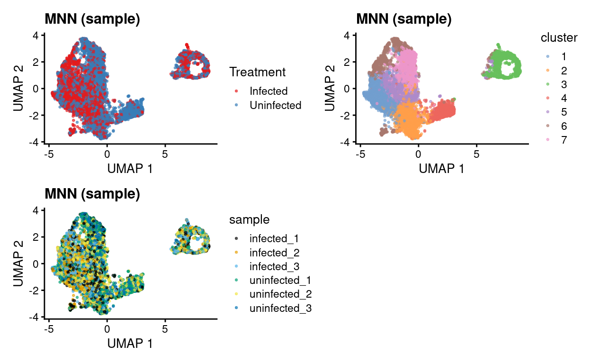
Show code
metadata(mnn_sample.out)$merge.info$lost.var
infected_1 infected_2 infected_3 uninfected_1 uninfected_2
[1,] 0.020956717 0.033500234 0.000000000 0.000000000 0.000000000
[2,] 0.002891713 0.003293084 0.032371402 0.000000000 0.000000000
[3,] 0.016385869 0.012359206 0.009731893 0.029496458 0.000000000
[4,] 0.002337161 0.002204300 0.002114354 0.003197765 0.037530298
[5,] 0.002273115 0.001716986 0.001771384 0.002828429 0.002689654
uninfected_3
[1,] 0.00000000
[2,] 0.00000000
[3,] 0.00000000
[4,] 0.00000000
[5,] 0.04373178
Show code
plot_grid(
ggplot(as.data.frame(
cbind(
colData(sce)[, "Sample", drop = FALSE],
colData(mnn_sample.out)[, "cluster", drop = FALSE]))) +
geom_bar(
aes(x = cluster, fill = Sample),
position = position_fill(reverse = TRUE)) +
coord_flip() +
ylab("Frequency") +
scale_fill_manual(values = sample_colours) +
theme_cowplot(font_size = 8),
ggplot(as.data.frame(
cbind(
colData(sce)[, "Treatment", drop = FALSE],
colData(mnn_sample.out)[, "cluster", drop = FALSE]))) +
geom_bar(
aes(x = cluster, fill = Treatment),
position = position_fill(reverse = TRUE)) +
coord_flip() +
ylab("Frequency") +
scale_fill_manual(values = treatment_colours) +
theme_cowplot(font_size = 8),
ggplot(as.data.frame(colData(mnn_sample.out)[, "cluster", drop = FALSE])) +
geom_bar(aes(x = cluster, fill = cluster)) +
coord_flip() +
ylab("Number of droplets") +
theme_cowplot(font_size = 8) +
guides(fill = FALSE),
align = "h",
ncol = 3)
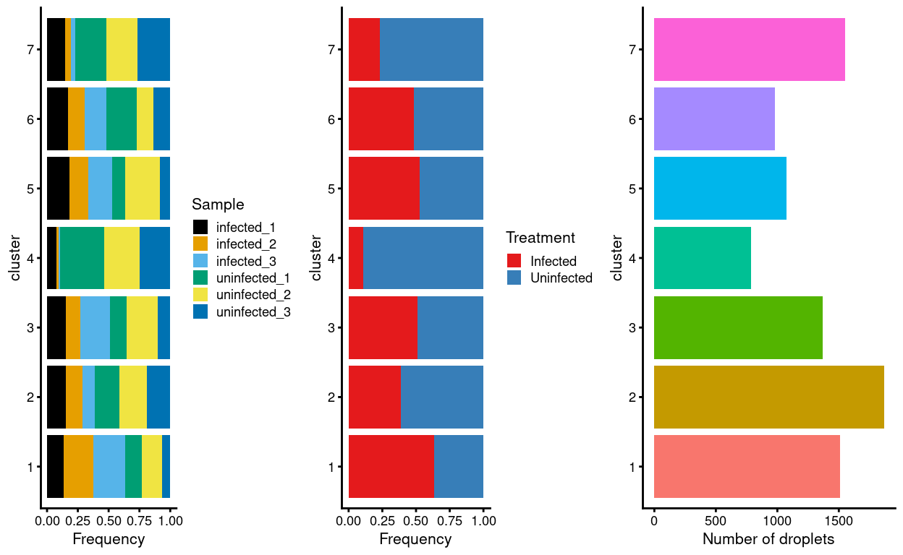
Show code
# Summary of data integration results ------------------------------------------
uncorrected.p1 + rescaled.p1 + residuals.p1 + mnn_treatment.p1 +
mnn_sample.p1 + plot_layout(guides = "collect")
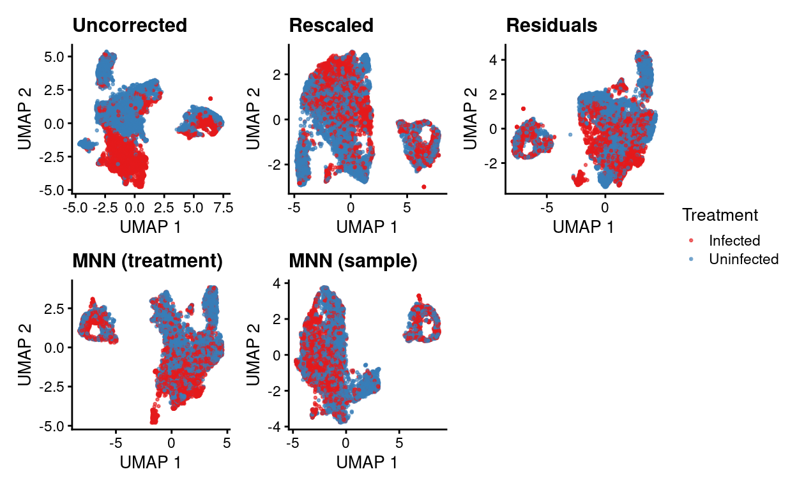
Show code
uncorrected.p2 + rescaled.p2 + residuals.p2 + mnn_treatment.p2 +
mnn_sample.p2
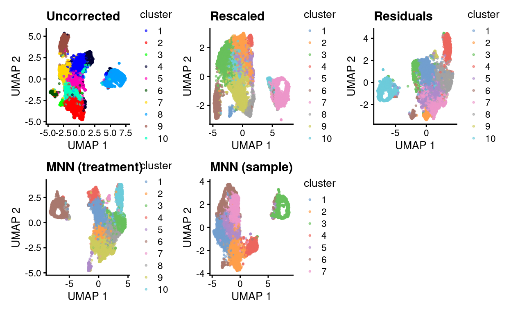
Show code
# NOTE: Uncorrected data has strong treatment-specific differences (and
# presumably donor-specific differences).
# Correcting for treatment using any of the 4 approaches removes/dampens
# those treatment-specific differences.
# However, it's a little hard to interpret if this is a good or bad thing.
# Therefore, will just use uncorrected data in what follows while
# remembering that this means there will be very treatment-specific
# (and perhaps donor-specific) clusters.
# Clustering at different resolutions ------------------------------------------
set.seed(126)
snn_gr <- buildSNNGraph(sce, use.dimred = "PCA", k = 20)
clusters <- igraph::cluster_louvain(snn_gr)
sce$cluster_k20 <- factor(clusters$membership)
snn_gr <- buildSNNGraph(sce, use.dimred = "PCA", k = 50)
clusters <- igraph::cluster_louvain(snn_gr)
sce$cluster_k50 <- factor(clusters$membership)
snn_gr <- buildSNNGraph(sce, use.dimred = "PCA", k = 100)
clusters <- igraph::cluster_louvain(snn_gr)
sce$cluster_k100 <- factor(clusters$membership)
p1 <- plotUMAP(sce, colour_by = "cluster") +
scale_colour_manual(values = cluster_colours, name = "cluster") +
ggtitle("Uncorrected: k = 10")
p2 <- plotUMAP(sce, colour_by = "cluster_k20") +
ggtitle("Uncorrected: k = 20")
p3 <- plotUMAP(sce, colour_by = "cluster_k50") +
ggtitle("Uncorrected: k = 50")
p4 <- plotUMAP(sce, colour_by = "cluster_k100") +
ggtitle("Uncorrected: k = 100")
p1 + p2 + p3 + p4 + plot_layout(ncol = 2)
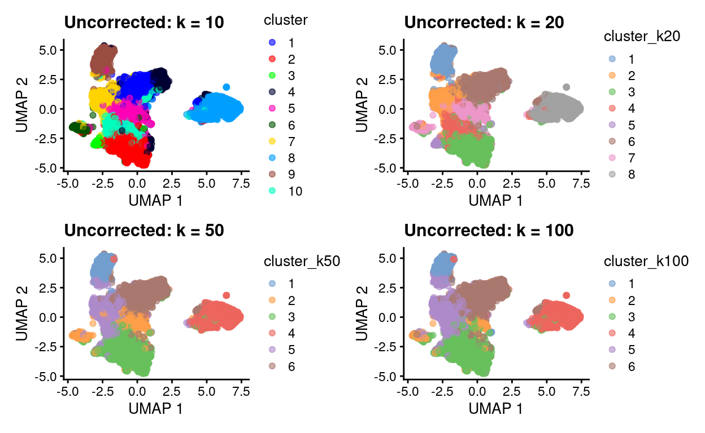
Show code
# NOTE: In all clusterings we observe an 'out group' on the right hand side.
# Look at cycling cluster(s) ---------------------------------------------------
# NOTE: Cell cycle could really be proliferation of T-cells upon activation
# Appears to be a cycling and non-cycling clustering driving the results.
# Cycling cluster(s) typified by upregulation of a large number of genes, larger
# library sizes, and cyclin expression.
# Non-cycling clusters typified by opposite and no upregulation of specific
# markers.
cycling_cluster <- "8"
sce$cycling_cluster <- ifelse(
sce$cluster %in% cycling_cluster,
"Cycling",
"Not cycling")
plotUMAP(sce, colour_by = "cycling_cluster")
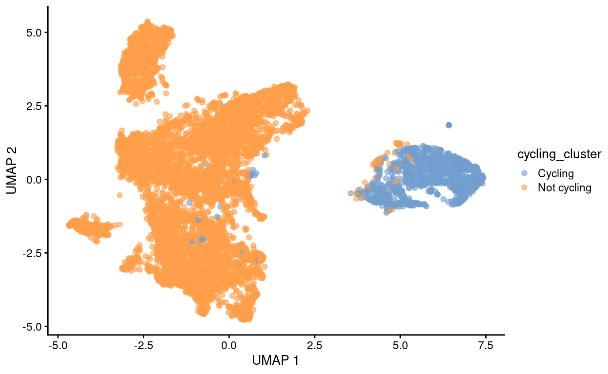
Show code
z <- findMarkers(sce, sce$cycling_cluster, direction = "up")
cyclin_genes <- grep("^CCN[ABDE][0-9]$", rowData(sce)$Symbol)
cyclin_genes <- sort(rownames(sce)[cyclin_genes])
cyclin_genes
[1] "CCNA1" "CCNA2" "CCNB1" "CCNB2" "CCNB3" "CCND1" "CCND2" "CCND3"
[9] "CCNE1" "CCNE2"
Show code
sce$ls <- log10(sce$sum)
plotHeatmap(
sce,
c(
head(rownames(z[["Not cycling"]]), 25),
head(rownames(z[["Cycling"]]), 25),
cyclin_genes),
order_columns_by = c("cycling_cluster", "cluster"),
cluster_rows = FALSE,
color = hcl.colors(101, "Blue-Red 3"),
center = TRUE,
zlim = c(-3, 3),
colour_columns_by = "ls",
colour_annotation_colours = list(
cluster = cluster_colours))
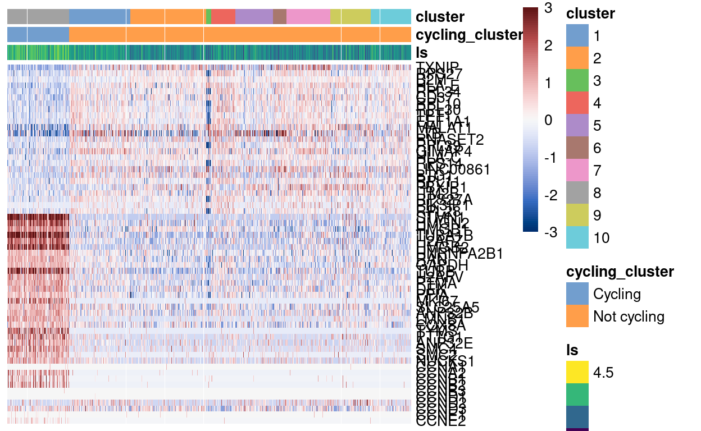
Show code
plot_grid(
ggplot(as.data.frame(colData(sce)[, c("cycling_cluster", "Sample")])) +
geom_bar(
aes(x = cycling_cluster, fill = Sample),
position = position_fill(reverse = TRUE)) +
coord_flip() +
ylab("Frequency") +
scale_fill_manual(values = sample_colours) +
theme_cowplot(font_size = 8),
ggplot(as.data.frame(colData(sce)[, c("cycling_cluster", "Treatment")])) +
geom_bar(
aes(x = cycling_cluster, fill = Treatment),
position = position_fill(reverse = TRUE)) +
coord_flip() +
ylab("Frequency") +
scale_fill_manual(values = treatment_colours) +
theme_cowplot(font_size = 8),
ggplot(as.data.frame(colData(sce)[, "cycling_cluster", drop = FALSE])) +
geom_bar(aes(x = cycling_cluster, fill = cycling_cluster)) +
coord_flip() +
ylab("Number of droplets") +
theme_cowplot(font_size = 8) +
guides(fill = FALSE),
align = "h",
ncol = 3)

Show code
# Subset analysis based on cycling cluster(s) ----------------------------------
set.seed(9391)
list_of_sce <- quickSubCluster(
sce,
groups = sce$cycling_cluster,
prepFUN = function(x) {
var_fit <- modelGeneVarByPoisson(x)
hvg <- getTopHVGs(var_fit, var.threshold = 0)
is_mito <- hvg %in% mito_set
is_ribo <- hvg %in% ribo_set
hvg <- hvg[!(is_mito | is_ribo)]
# NOTE: Keep the original dimensionality reduction around for downstream
# plotting.
reducedDimNames(x) <- paste0("original_", reducedDimNames(x))
denoisePCA(x, var_fit, subset.row = hvg)
},
clusterFUN = function(x) {
snn_gr <- buildSNNGraph(x, use.dimred = "PCA", k = 50)
factor(igraph::cluster_louvain(snn_gr)$membership)
})
# It's also useful to have per-sample UMAP representations.
set.seed(17127)
list_of_sce <- lapply(list_of_sce, runUMAP, dimred = "PCA")
# It's also useful to have SingleR DICE with fine labels for subclusters
library(SingleR)
library(celldex)
ref <- DatabaseImmuneCellExpressionData()
labels_fine <- ref$label.fine
# NOTE: This code doesn't necessarily generalise beyond the DICE main labels.
label_fine_collapsed_colours <- setNames(
c(
Polychrome::glasbey.colors(nlevels(factor(labels_fine)) + 1)[-1],
"orange"),
c(levels(factor(labels_fine)), "other"))
list_of_sce <- lapply(list_of_sce, function(x) {
pred_subcluster_fine <- SingleR(
test = x,
ref = ref,
labels = labels_fine,
clusters = x$subcluster)
x$label_subcluster_fine <- factor(
pred_subcluster_fine[x$subcluster, "pruned.labels"])
x
})
list_of_sce <- lapply(list_of_sce, function(x) {
pred_cell_fine <- SingleR(
test = x,
ref = ref,
labels = labels_fine)
x$label_cell_fine <- factor(pred_cell_fine$pruned.labels)
x
})
plot_grid(
plotlist = lapply(names(list_of_sce), function(n) {
x <- list_of_sce[[n]]
plotUMAP(x, colour_by = "subcluster") +
ggtitle(n)
}))
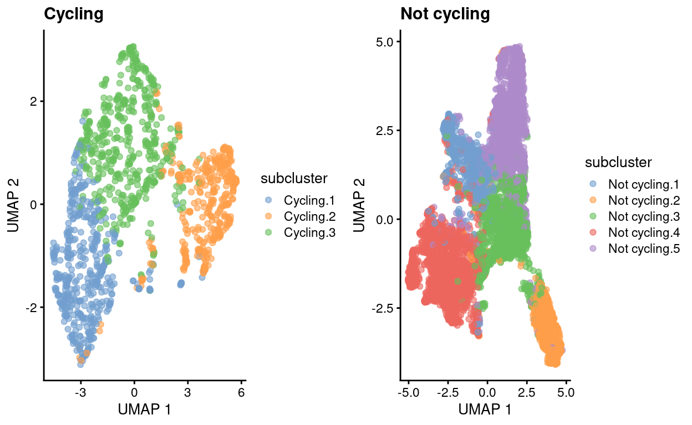
Show code
plot_grid(
plotlist = lapply(names(list_of_sce), function(n) {
x <- list_of_sce[[n]]
plotUMAP(x, colour_by = "label_subcluster_fine", text_by = "subcluster") +
ggtitle(n)
}))
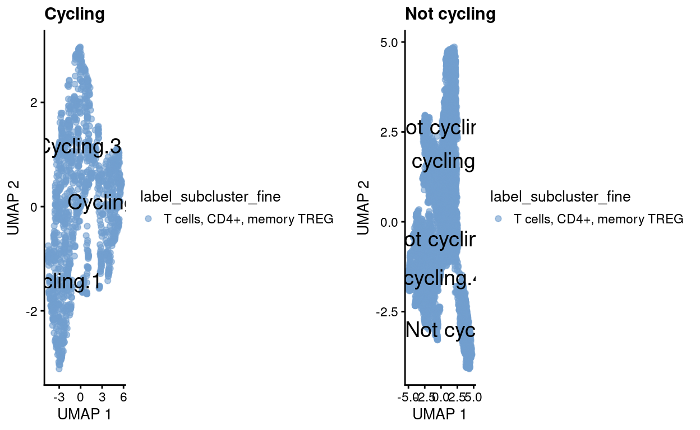
Show code
plot_grid(
plotlist = lapply(names(list_of_sce), function(n) {
x <- list_of_sce[[n]]
plotUMAP(x, colour_by = "label_cell_fine", text_by = "subcluster") +
ggtitle(n)
}))
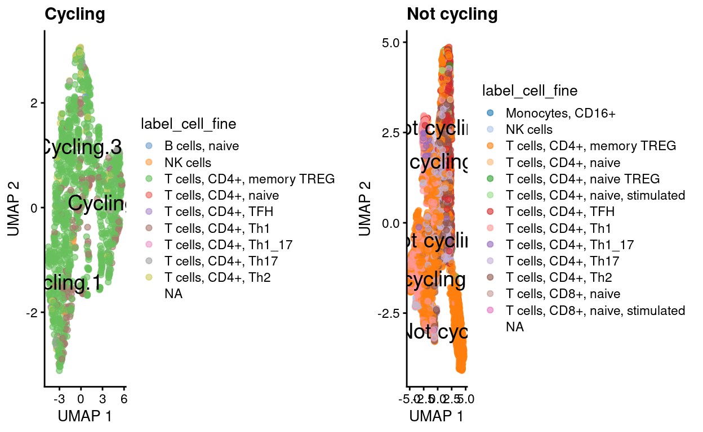
Show code
x <- list_of_sce[["Not cycling"]]
m <- findMarkers(x, x$subcluster, direction = "up", pval.type = "all")
sapply(m, function(x) sum(x$FDR < 0.05))
Not cycling.1 Not cycling.2 Not cycling.3 Not cycling.4 Not cycling.5
136 424 203 277 652
Show code
features <- unique(unlist(lapply(m, function(x) head(rownames(x), 10))))
plotHeatmap(
x,
features = features,
order_columns_by = c("subcluster", "Treatment", "Sample"),
color = hcl.colors(101, "Blue-Red 3"),
center = TRUE,
zlim = c(-3, 3),
column_annotation_colors = list(
Treatment = treatment_colours,
Sample = sample_colours),
cluster_rows = FALSE,
annotation_row = data.frame(
subcluster = rep(names(m), each = length(features) / length(m)),
row.names = features))
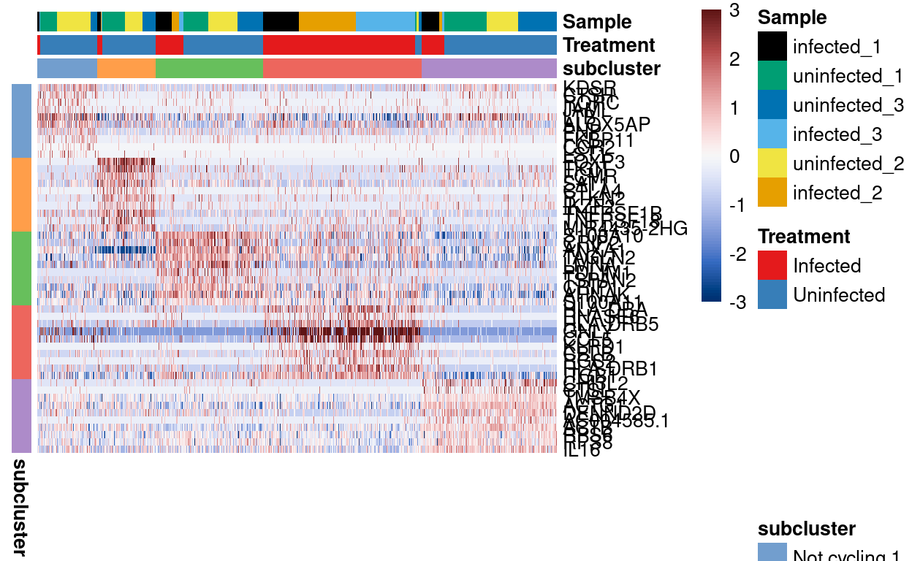
Show code
x <- list_of_sce[["Cycling"]]
m <- findMarkers(x, x$subcluster, direction = "up", pval.type = "all")
features <- unique(unlist(lapply(m, function(x) head(rownames(x), 10))))
plotHeatmap(
x,
features = features,
order_columns_by = c("subcluster", "Treatment", "Sample"),
color = hcl.colors(101, "Blue-Red 3"),
center = TRUE,
zlim = c(-3, 3),
column_annotation_colors = list(
Treatment = treatment_colours,
Sample = sample_colours),
cluster_rows = FALSE,
annotation_row = data.frame(
subcluster = rep(names(m), each = length(features) / length(m)),
row.names = features))
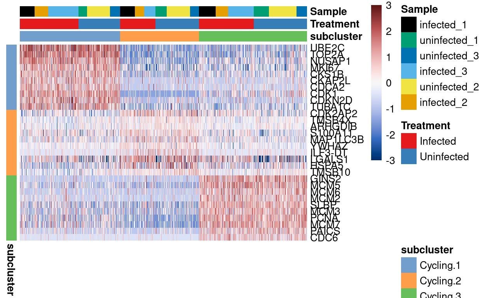
Show code
# Using the cyclins ------------------------------------------------------------
# - Cyclin A is expressed across S and G2
# - Cyclin B is expressed highest in late G2 and mitosis (Morgan 2007).
# - Cyclin D is expressed throughout but peaks at G1
# - Cyclin E is expressed highest in the G1/S transition
plotHeatmap(
sce,
order_columns_by = c("cycling_cluster", "cluster"),
cluster_rows = FALSE,
features = sort(cyclin_genes),
color = viridisLite::magma(101),
column_annotation_colors = list(cluster = cluster_colours))
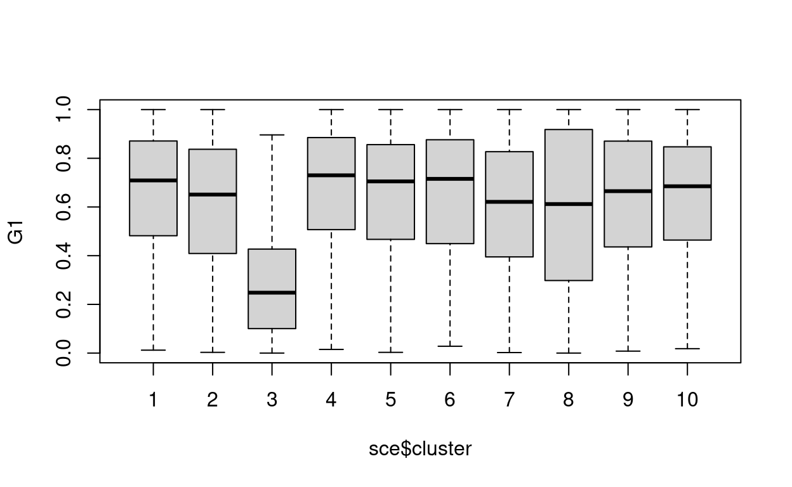
Show code
markers <- findMarkers(
sce,
sce$cluster,
subset.row = cyclin_genes,
test.type = "wilcox",
direction = "up")
markers[[cycling_cluster]]
DataFrame with 10 rows and 13 columns
Top p.value FDR summary.AUC AUC.1
<integer> <numeric> <numeric> <numeric> <numeric>
CCNA2 1 3.16825e-222 3.16825e-221 0.843281 0.844552
CCNB2 2 4.08240e-210 2.04120e-209 0.833734 0.835996
CCNB1 3 1.89056e-150 6.30187e-150 0.782023 0.782010
CCND3 3 1.10068e-100 2.75170e-100 0.809909 0.630868
CCNE2 4 1.85899e-39 3.71797e-39 0.642793 0.641105
CCNE1 5 1.77239e-04 2.95398e-04 0.547178 0.547178
CCNA1 6 8.67796e-02 1.23971e-01 0.522934 0.522934
CCNB3 8 4.88618e-01 6.10772e-01 0.501075 0.500715
CCND1 8 6.99189e-01 7.76877e-01 0.501142 0.490244
CCND2 8 1.00000e+00 1.00000e+00 0.509288 0.323983
AUC.2 AUC.3 AUC.4 AUC.5 AUC.6 AUC.7
<numeric> <numeric> <numeric> <numeric> <numeric> <numeric>
CCNA2 0.843281 0.841791 0.845650 0.844884 0.844037 0.844084
CCNB2 0.833734 0.829177 0.834188 0.835210 0.834722 0.836116
CCNB1 0.782023 0.778047 0.777010 0.778627 0.783397 0.777562
CCND3 0.550632 0.744858 0.809909 0.519120 0.568795 0.610817
CCNE2 0.642793 0.644444 0.640699 0.639405 0.644444 0.641097
CCNE1 0.540656 0.544193 0.540975 0.548282 0.549462 0.545080
CCNA1 0.519401 0.513455 0.519594 0.521494 0.523297 0.522773
CCNB3 0.501075 0.501075 0.501075 0.501075 0.501075 0.501075
CCND1 0.501142 0.501434 0.491444 0.498494 0.499784 0.500927
CCND2 0.509288 0.456383 0.478717 0.341492 0.397354 0.398468
AUC.9 AUC.10
<numeric> <numeric>
CCNA2 0.844647 0.843715
CCNB2 0.825768 0.834878
CCNB1 0.778895 0.778932
CCND3 0.757194 0.580631
CCNE2 0.639583 0.640585
CCNE1 0.547782 0.537729
CCNA1 0.522166 0.522176
CCNB3 0.501075 0.500530
CCND1 0.499782 0.500887
CCND2 0.316764 0.449001
Show code
# Using the cyclone() classifier -----------------------------------------------
# TODO: Save output from run on vc7-shared and load here.
# hs.pairs <- readRDS(system.file("exdata", "human_cycle_markers.rds",
# package="scran"))
#
# # Using Ensembl IDs to match up with the annotation in 'hs.pairs'.
# NOTE: This was run and the results saved.
# set.seed(100)
# assignments <- cyclone(
# sce,
# hs.pairs,
# gene.names = rowData(sce)$ENSEMBL.GENEID)
assignments <- readRDS(here("tmp/cyclone_assignments.rds"))
plot(
x = assignments$score$G1,
y = assignments$score$G2M,
xlab = "G1 score",
ylab = "G2/M score",
pch = 16,
col = sce$cluster_colours)
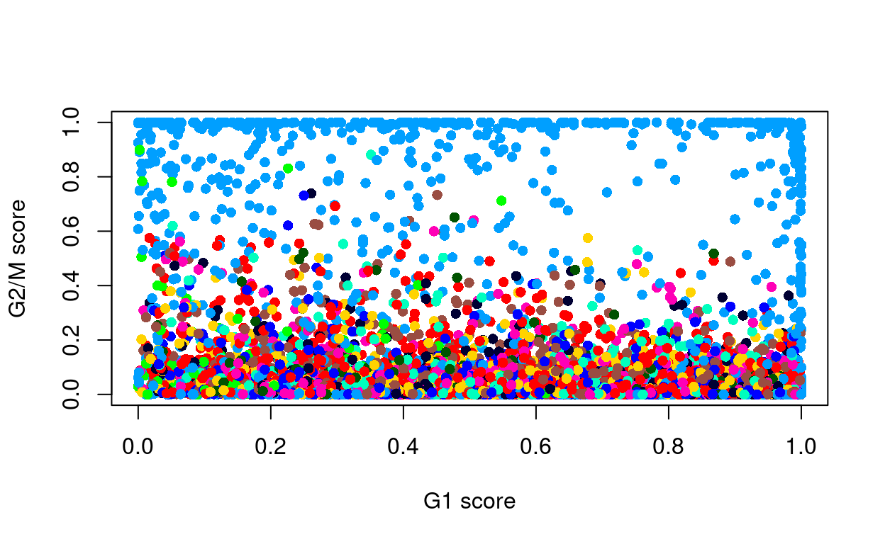
Show code
boxplot(assignments$scores$G1 ~ sce$cluster, ylab = "G1")
Show code
boxplot(assignments$scores$G2M ~ sce$cluster, ylab = "G2M")
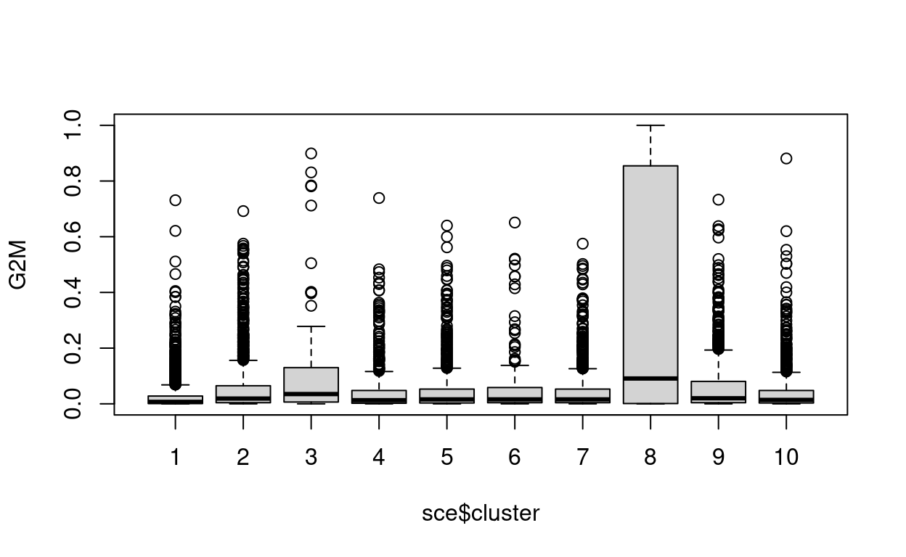
Show code
G1 G2M S
1 0.738660907 0.002159827 0.259179266
2 0.659289458 0.006988934 0.333721607
3 0.163461538 0.057692308 0.778846154
4 0.757246377 0.001811594 0.240942029
5 0.726846424 0.003516999 0.269636577
6 0.700657895 0.006578947 0.292763158
7 0.647118301 0.001011122 0.351870576
8 0.478136201 0.313978495 0.207885305
9 0.698133919 0.006586169 0.295279912
10 0.721919302 0.005452563 0.272628135
Show code
G1 G2M S
Cycling 0.478136201 0.313978495 0.207885305
Not cycling 0.693381593 0.005041365 0.301577042
Show code
plotUMAP(
sce,
colour_by = data.frame(G1 = assignments$score$G1),
text_by = "cluster") +
plotUMAP(
sce,
colour_by = data.frame(G2M = assignments$score$G2M),
text_by = "cluster") +
plotUMAP(sce, colour_by = "cluster", text_by = "cluster") +
scale_colour_manual(values = cluster_colours, name = "cluster") +
plot_layout(ncol = 2)
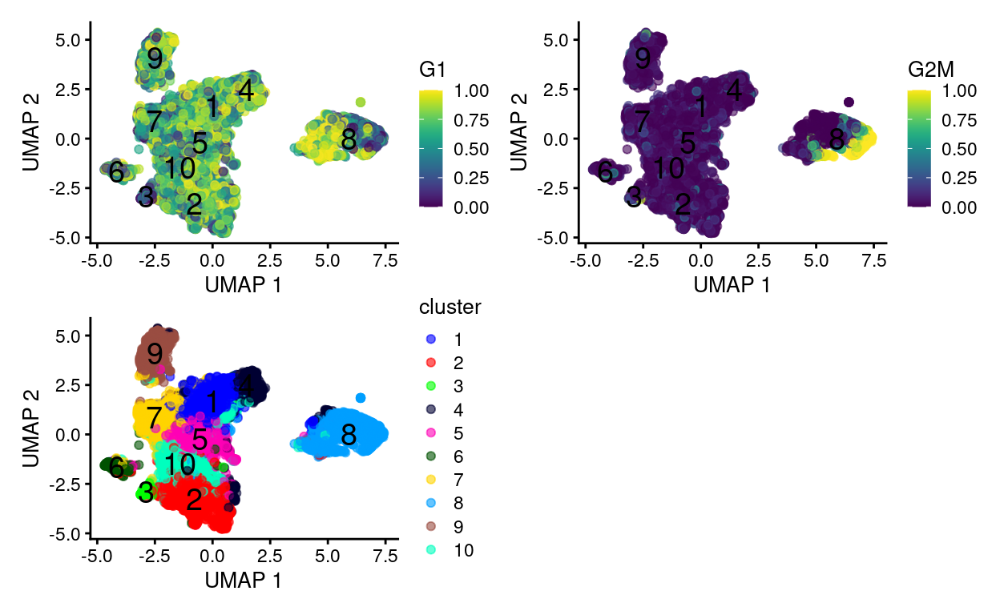
Show code
# DE analysis using cycling vs. non-cycling labels -----------------------------
library(edgeR)
plotMDS <- scater::plotMDS
# NOTE: Have to drop the complicated TRA and TRB DFrameList objects.
tmp <- sce
tmp$TRA <- NULL
tmp$TRB <- NULL
summed <- aggregateAcrossCells(
tmp,
id = colData(tmp)[, c("cycling_cluster", "Sample")])
sizeFactors(summed) <- NULL
summed <- logNormCounts(summed)
summed <- runMDS(summed)
p1 <- plotMDS(summed, colour_by = "Treatment", shape_by = "cycling_cluster") +
scale_colour_manual(values = treatment_colours, name = "Treatment")
p2 <- plotMDS(summed, colour_by = "Sample", shape_by = "cycling_cluster") +
scale_colour_manual(values = sample_colours, name = "Sample")
p1 + p2 + plot_layout(guides = "collect")
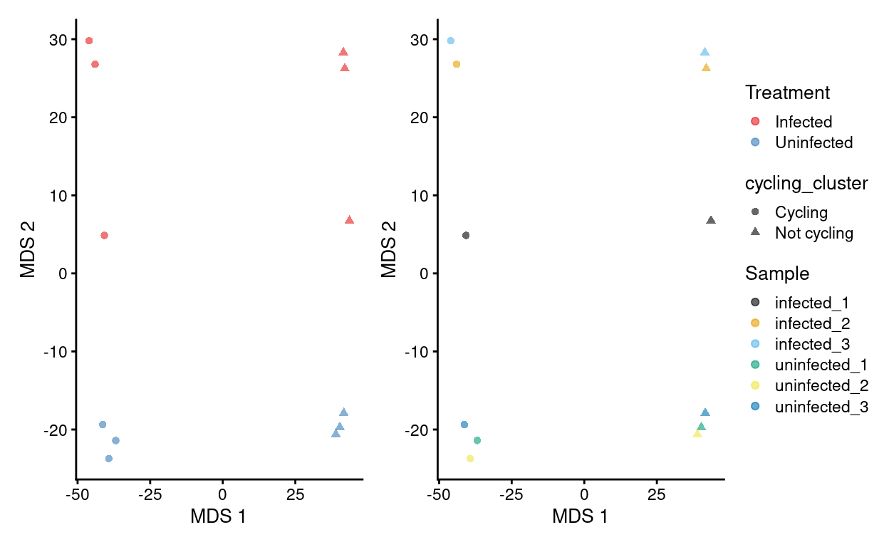
Show code
summed.filt <- summed[,summed$ncells >= 10]
de.results <- pseudoBulkDGE(
summed.filt,
label = summed.filt$cycling_cluster,
design = ~Treatment,
coef = "TreatmentUninfected",
condition = summed.filt$Treatment,
include.intermediates = TRUE)
cur.results <- de.results[["Not cycling"]]
cur.results[order(cur.results$PValue),]
DataFrame with 20602 rows and 5 columns
logFC logCPM F PValue FDR
<numeric> <numeric> <numeric> <numeric> <numeric>
GLUL -1.97085 6.53864 408.519 1.57230e-09 9.67932e-06
IL4R -1.26671 6.38142 389.426 1.75926e-09 9.67932e-06
NSMCE1 -1.07070 7.29219 349.346 3.02519e-09 9.67932e-06
CADM1 -3.69238 4.58859 421.521 3.45844e-09 9.67932e-06
CHST7 -1.63813 5.58938 260.960 1.28684e-08 2.88123e-05
... ... ... ... ... ...
AL354822.1 NA NA NA NA NA
AC004556.1 NA NA NA NA NA
AC233755.2 NA NA NA NA NA
AC233755.1 NA NA NA NA NA
AC240274.1 NA NA NA NA NA
Show code
sizeFactors(summed.filt) <- NULL
plotExpression(
logNormCounts(summed.filt),
features = "IL4R",
x = "Treatment",
colour_by = "Treatment",
other_fields = "cycling_cluster") +
facet_wrap(~cycling_cluster) +
scale_colour_manual(values = treatment_colours, name = "Treatment")
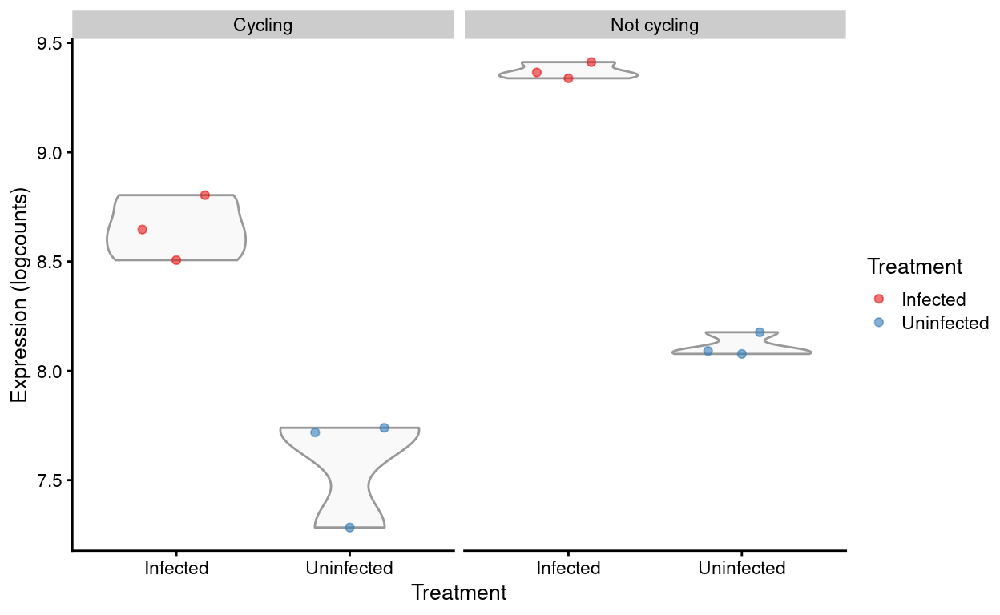
Show code
y.cur.results <- metadata(cur.results)$y
plotBCV(y.cur.results)
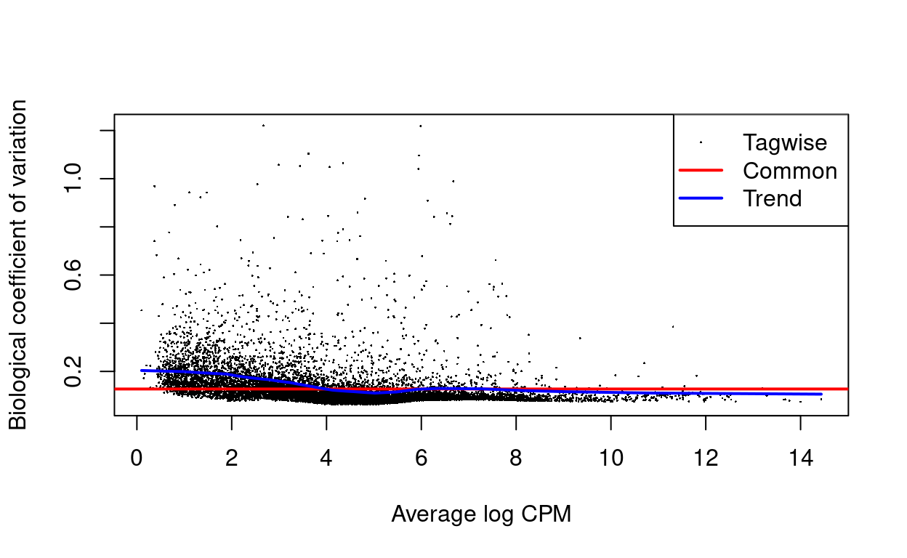
Show code
metadata(de.results)$failed
character(0)
Show code
-1 0 1 NA
Cycling 183 9560 147 10712
Not cycling 617 10048 530 9407
Show code
# Upregulated across most labels
up.de <- is.de > 0 & !is.na(is.de)
head(sort(rowMeans(up.de), decreasing=TRUE), 10)
RCAN3 IFI6 CCDC28B PIK3R3 CDKN2C IFI44 FNBP1L THEM4
1 1 1 1 1 1 1 1
F5 GPR25
1 1
Show code
# Downregulated across most labels
down.de <- is.de < 0 & !is.na(is.de)
head(sort(rowMeans(down.de), decreasing=TRUE), 10)
DHRS3 ZBTB8OS TTC22 KIAA1324 PDE4DIP AIM2 ATP1B1
1 1 1 1 1 1 1
NME7 GLUL RGS2
1 1 1
Show code
de.specific <- pseudoBulkSpecific(
summed.filt,
label = summed.filt$cycling_cluster,
design = ~Treatment,
coef = "TreatmentUninfected",
condition = summed.filt$Treatment)
cur.specific <- de.specific[["Not cycling"]]
cur.specific <- cur.specific[order(cur.specific$PValue),]
cur.specific
DataFrame with 20602 rows and 6 columns
logFC logCPM F PValue FDR
<numeric> <numeric> <numeric> <numeric> <numeric>
PTGER2 4.84777 2.54622 135.2807 3.15865e-07 0.00353611
TRBV10-1 3.31391 3.72002 136.4802 1.62083e-06 0.00722661
LINC00891 2.96688 2.00801 92.1348 1.93656e-06 0.00722661
ATP6V0A1 3.26980 1.69805 79.6872 3.78419e-06 0.00923658
NBPF1 1.66827 2.69831 76.9033 4.45254e-06 0.00923658
... ... ... ... ... ...
AL354822.1 NA NA NA NA NA
AC004556.1 NA NA NA NA NA
AC233755.2 NA NA NA NA NA
AC233755.1 NA NA NA NA NA
AC240274.1 NA NA NA NA NA
OtherAverage
<numeric>
PTGER2 NA
TRBV10-1 0.00901858
LINC00891 NA
ATP6V0A1 NA
NBPF1 NA
... ...
AL354822.1 NA
AC004556.1 NA
AC233755.2 NA
AC233755.1 NA
AC240274.1 NA
Show code
# DE analysis using cluster labels ---------------------------------------------
library(edgeR)
plotMDS <- scater::plotMDS
# NOTE: Have to drop the complicated TRA and TRB DFrameList objects.
tmp <- sce
tmp$TRA <- NULL
tmp$TRB <- NULL
summed <- aggregateAcrossCells(
tmp,
id = colData(tmp)[, c("cluster", "Sample")])
sizeFactors(summed) <- NULL
summed <- logNormCounts(summed)
summed <- runMDS(summed)
p1 <- plotMDS(summed, colour_by = "cluster", shape_by = "Treatment") +
scale_colour_manual(values = cluster_colours, name = "cluster")
p2 <- plotMDS(summed, colour_by = "cluster", shape_by = "Sample") +
scale_colour_manual(values = cluster_colours, name = "cluster")
p1 + p2 + plot_layout(guides = "collect")
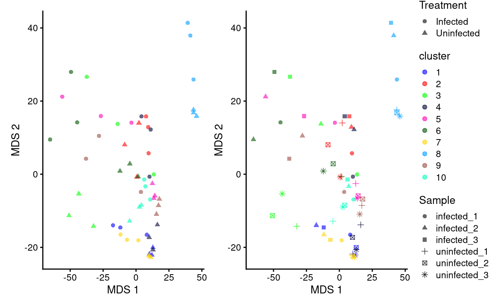
Show code
summed.filt <- summed[,summed$ncells >= 10]
de.results <- pseudoBulkDGE(
summed.filt,
label = summed.filt$cluster,
design = ~Treatment,
coef = "TreatmentUninfected",
condition = summed.filt$Treatment,
include.intermediates = TRUE)
cur.results <- de.results[["8"]]
cur.results[order(cur.results$PValue),]
DataFrame with 20602 rows and 5 columns
logFC logCPM F PValue FDR
<numeric> <numeric> <numeric> <numeric> <numeric>
CADM1 -4.41554 4.93024 413.094 1.58133e-11 1.56393e-07
GLUL -2.04934 6.68893 355.098 4.25676e-11 2.10497e-07
LTA 3.07047 4.89093 287.890 1.66639e-10 5.49355e-07
APBA2 -4.32479 3.61273 176.907 3.76220e-09 9.30203e-06
RASGRP4 4.42101 3.35886 122.077 3.78884e-08 7.49433e-05
... ... ... ... ... ...
AL354822.1 NA NA NA NA NA
AC004556.1 NA NA NA NA NA
AC233755.2 NA NA NA NA NA
AC233755.1 NA NA NA NA NA
AC240274.1 NA NA NA NA NA
Show code
sizeFactors(summed.filt) <- NULL
plotExpression(
logNormCounts(summed.filt),
features = "CADM1",
x = "Treatment",
colour_by = "Treatment",
other_fields = "cluster") +
facet_wrap(~cluster) +
scale_colour_manual(values = treatment_colours, name = "Treatment")
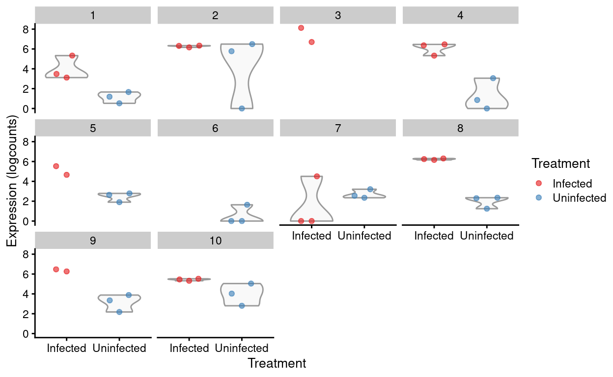
Show code
y.cur.results <- metadata(cur.results)$y
plotBCV(y.cur.results)
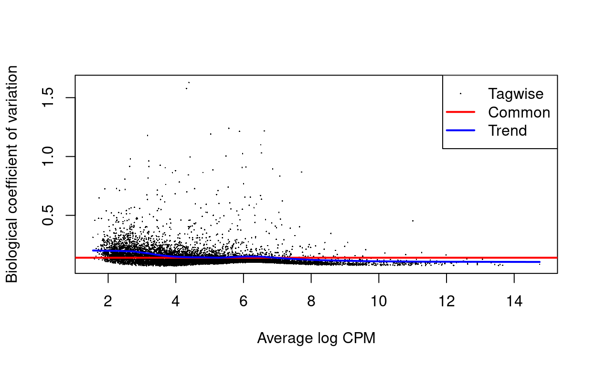
Show code
metadata(de.results)$failed
[1] "3" "6"
Show code
-1 0 1 NA
1 32 8878 14 11678
10 10 6258 4 14330
2 10 7089 7 13496
4 242 5206 254 14900
5 5 7592 6 12999
7 10 7505 11 13076
8 183 9560 147 10712
9 29 8253 27 12293
Show code
# Upregulated across most labels
up.de <- is.de > 0 & !is.na(is.de)
head(sort(rowMeans(up.de), decreasing=TRUE), 10)
CISH XAF1 RCAN3 GPR25 FOXP1 PLAC8 LTB TOX TBC1D4 ISG15
0.500 0.500 0.375 0.375 0.375 0.375 0.375 0.375 0.375 0.250
Show code
# Downregulated across most labels
down.de <- is.de < 0 & !is.na(is.de)
head(sort(rowMeans(down.de), decreasing=TRUE), 10)
GLUL RGS2 CBLB CD74 HLA-DRA NFKBIA LMO4
0.750 0.750 0.625 0.625 0.625 0.625 0.500
HLA-DRB5 HLA-DRB1 HLA-DPA1
0.500 0.500 0.500
Show code
de.specific <- pseudoBulkSpecific(
summed.filt,
label = summed.filt$cluster,
design = ~Treatment,
coef = "TreatmentUninfected",
condition = summed.filt$Treatment)
cur.specific <- de.specific[["8"]]
cur.specific <- cur.specific[order(cur.specific$PValue),]
cur.specific
DataFrame with 20602 rows and 6 columns
logFC logCPM F PValue FDR
<numeric> <numeric> <numeric> <numeric> <numeric>
CHN2 -2.82549 3.29849 88.9951 2.55015e-07 0.00105827
LTA 3.07047 4.89093 287.8897 2.78324e-07 0.00105827
GLB1L3 -3.15161 2.93790 85.5971 3.21012e-07 0.00105827
FNBP1L 4.90794 2.14151 72.4389 8.49798e-07 0.00206386
CTSW -1.30698 5.13668 69.8988 1.04341e-06 0.00206386
... ... ... ... ... ...
AL354822.1 NA NA NA NA NA
AC004556.1 NA NA NA NA NA
AC233755.2 NA NA NA NA NA
AC233755.1 NA NA NA NA NA
AC240274.1 NA NA NA NA NA
OtherAverage
<numeric>
CHN2 NA
LTA 1.350294
GLB1L3 NA
FNBP1L NA
CTSW 0.771803
... ...
AL354822.1 NA
AC004556.1 NA
AC233755.2 NA
AC233755.1 NA
AC240274.1 NA
Show code
# DE analysis using subcluster labels in non-cycling clusters ------------------
library(edgeR)
plotMDS <- scater::plotMDS
# NOTE: Have to drop the complicated TRA and TRB DFrameList objects.
tmp <- list_of_sce$`Not cycling`
tmp$TRA <- NULL
tmp$TRB <- NULL
summed <- aggregateAcrossCells(
tmp,
id = colData(tmp)[, c("subcluster", "Sample")])
sizeFactors(summed) <- NULL
summed <- logNormCounts(summed)
summed <- runMDS(summed)
p1 <- plotMDS(summed, colour_by = "subcluster", shape_by = "Treatment")
p2 <- plotMDS(summed, colour_by = "subcluster", shape_by = "Sample")
p1 + p2 + plot_layout(guides = "collect")
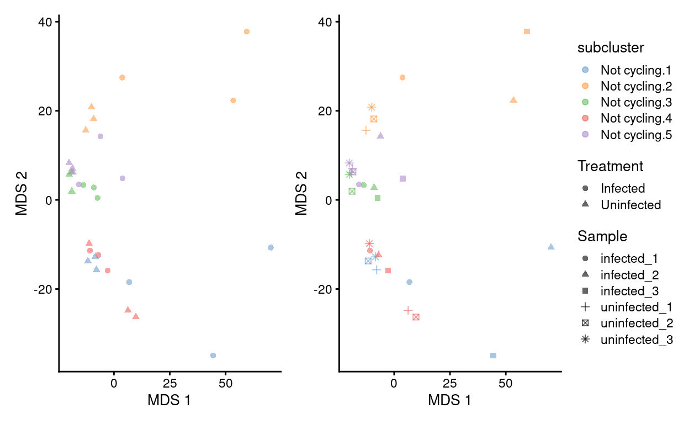
Show code
summed.filt <- summed[,summed$ncells >= 10]
de.results <- pseudoBulkDGE(
summed.filt,
label = summed.filt$subcluster,
design = ~Treatment,
coef = "TreatmentUninfected",
condition = summed.filt$Treatment,
include.intermediates = TRUE)
cur.results <- de.results[["Not cycling.4"]]
cur.results[order(cur.results$PValue),]
DataFrame with 20602 rows and 5 columns
logFC logCPM F PValue FDR
<numeric> <numeric> <numeric> <numeric> <numeric>
CISH 2.981798 3.73973 74.8370 3.82607e-07 0.00192372
GPR25 2.097036 5.02550 73.6263 4.23308e-07 0.00192372
RASGRP4 6.036752 1.38445 63.0885 1.08835e-06 0.00329735
CD74 -0.710945 11.53186 50.7015 3.96384e-06 0.00900684
ITGB1 -0.766457 10.32276 48.0432 5.40378e-06 0.00982299
... ... ... ... ... ...
AL354822.1 NA NA NA NA NA
AC004556.1 NA NA NA NA NA
AC233755.2 NA NA NA NA NA
AC233755.1 NA NA NA NA NA
AC240274.1 NA NA NA NA NA
Show code
sizeFactors(summed.filt) <- NULL
plotExpression(
logNormCounts(summed.filt),
features = "CD74",
x = "Treatment",
colour_by = "Treatment",
other_fields = "subcluster") +
facet_wrap(~subcluster) +
scale_colour_manual(values = treatment_colours, name = "Treatment")
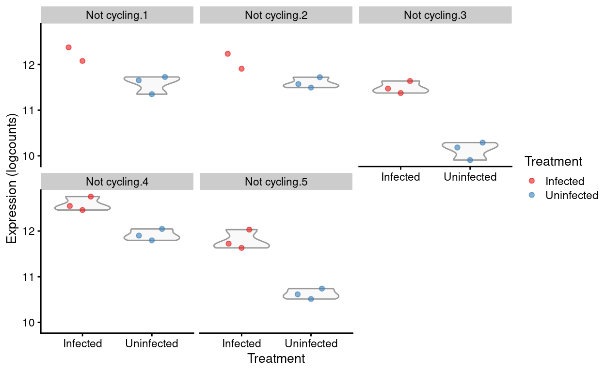
Show code
y.cur.results <- metadata(cur.results)$y
plotBCV(y.cur.results)
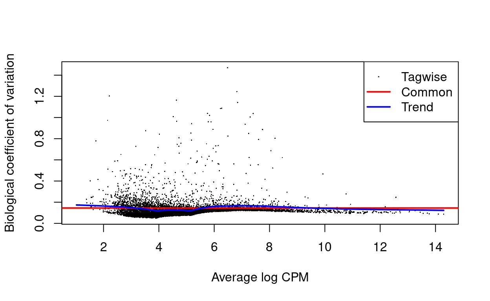
Show code
metadata(de.results)$failed
character(0)
Show code
-1 0 1 NA
Not cycling.1 12 6103 6 14481
Not cycling.2 14 8239 8 12341
Not cycling.3 84 8712 68 11738
Not cycling.4 14 9058 17 11513
Not cycling.5 88 9361 46 11107
Show code
# Upregulated across most labels
up.de <- is.de > 0 & !is.na(is.de)
head(sort(rowMeans(up.de), decreasing=TRUE), 10)
PTPN4 CISH CCND2 ISG15 TCEA3 IFI44 DENND2D LMNA
0.6 0.6 0.6 0.4 0.4 0.4 0.4 0.4
GPR25 TRABD2A
0.4 0.4
Show code
# Downregulated across most labels
down.de <- is.de < 0 & !is.na(is.de)
head(sort(rowMeans(down.de), decreasing=TRUE), 10)
CD74 HLA-DRB5 ALOX5AP LMO4 RGS2 HLA-DRA HLA-DRB1
0.8 0.8 0.8 0.6 0.6 0.6 0.6
HLA-DQA1 HLA-DQA2 HLA-DPA1
0.6 0.6 0.6
Show code
de.specific <- pseudoBulkSpecific(
summed.filt,
label = summed.filt$subcluster,
design = ~Treatment,
coef = "TreatmentUninfected",
condition = summed.filt$Treatment)
cur.specific <- de.specific[["Not cycling.4"]]
cur.specific <- cur.specific[order(cur.specific$PValue),]
cur.specific
DataFrame with 20602 rows and 6 columns
logFC logCPM F PValue FDR
<numeric> <numeric> <numeric> <numeric> <numeric>
DTHD1 4.486733 1.12407 28.7466 8.53701e-05 0.482701
RASSF1 0.979815 6.09213 34.1281 1.06216e-04 0.482701
FOXP3 2.747233 2.94990 27.5003 2.59671e-04 0.496065
TRGV8 3.691656 2.78502 28.1151 2.85481e-04 0.496065
DRAIC 3.492989 1.56497 26.2134 3.10287e-04 0.496065
... ... ... ... ... ...
AL354822.1 NA NA NA NA NA
AC004556.1 NA NA NA NA NA
AC233755.2 NA NA NA NA NA
AC233755.1 NA NA NA NA NA
AC240274.1 NA NA NA NA NA
OtherAverage
<numeric>
DTHD1 NA
RASSF1 0.102385
FOXP3 0.280986
TRGV8 NA
DRAIC 0.357498
... ...
AL354822.1 NA
AC004556.1 NA
AC233755.2 NA
AC233755.1 NA
AC240274.1 NA
Show code
# DE analysis using subcluster labels in cycling clusters ----------------------
library(edgeR)
plotMDS <- scater::plotMDS
# NOTE: Have to drop the complicated TRA and TRB DFrameList objects.
tmp <- list_of_sce$Cycling
tmp$TRA <- NULL
tmp$TRB <- NULL
summed <- aggregateAcrossCells(
tmp,
id = colData(tmp)[, c("subcluster", "Sample")])
sizeFactors(summed) <- NULL
summed <- logNormCounts(summed)
summed <- runMDS(summed)
p1 <- plotMDS(summed, colour_by = "subcluster", shape_by = "Treatment")
p2 <- plotMDS(summed, colour_by = "subcluster", shape_by = "Sample")
p1 + p2 + plot_layout(guides = "collect")
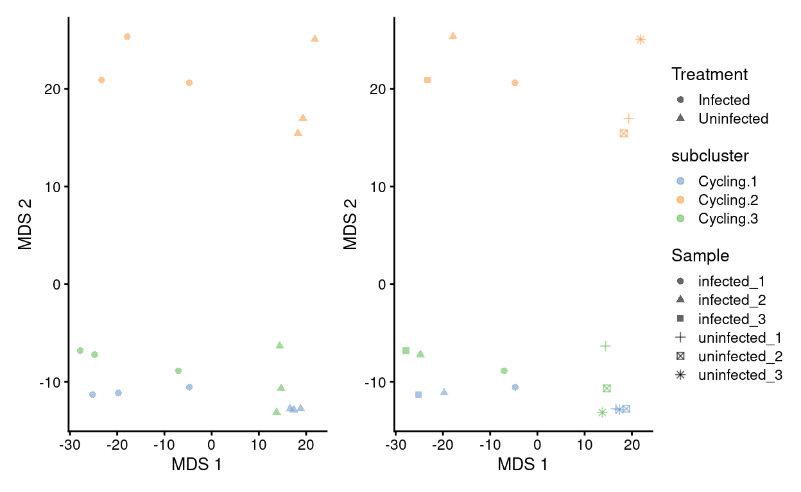
Show code
summed.filt <- summed[,summed$ncells >= 10]
de.results <- pseudoBulkDGE(
summed.filt,
label = summed.filt$subcluster,
design = ~Treatment,
coef = "TreatmentUninfected",
condition = summed.filt$Treatment,
include.intermediates = TRUE)
cur.results <- de.results[["Cycling.1"]]
cur.results[order(cur.results$PValue),]
DataFrame with 20602 rows and 5 columns
logFC logCPM F PValue FDR
<numeric> <numeric> <numeric> <numeric> <numeric>
GLUL -2.11535 6.55222 186.5379 5.36013e-13 4.13534e-09
CADM1 -4.47232 5.19656 156.8050 4.64020e-12 1.78996e-08
RGS2 -4.21474 5.60664 168.2808 4.07983e-11 1.04920e-07
GNG4 -3.56366 5.74719 142.4618 8.29211e-10 1.59934e-06
LTA 2.78225 4.60942 85.1966 1.79361e-09 2.61272e-06
... ... ... ... ... ...
AL354822.1 NA NA NA NA NA
AC004556.1 NA NA NA NA NA
AC233755.2 NA NA NA NA NA
AC233755.1 NA NA NA NA NA
AC240274.1 NA NA NA NA NA
Show code
sizeFactors(summed.filt) <- NULL
plotExpression(
logNormCounts(summed.filt),
features = "GLUL",
x = "Treatment",
colour_by = "Treatment",
other_fields = "subcluster") +
facet_wrap(~subcluster) +
scale_colour_manual(values = treatment_colours, name = "Treatment")
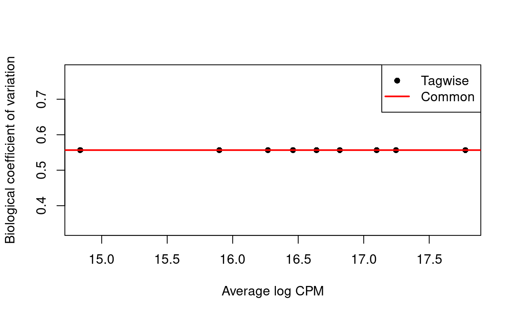
Show code
y.cur.results <- metadata(cur.results)$y
plotBCV(y.cur.results)

Show code
metadata(de.results)$failed
character(0)
Show code
-1 0 1 NA
Cycling.1 98 7519 98 12887
Cycling.2 98 6051 66 14387
Cycling.3 112 8356 75 12059
Show code
# Upregulated across most labels
up.de <- is.de > 0 & !is.na(is.de)
head(sort(rowMeans(up.de), decreasing=TRUE), 10)
IFI6 THEM4 FOXP1 LTA SMS TOX IRF7 RCBTB2 MYCBP2 MAF
1 1 1 1 1 1 1 1 1 1
Show code
# Downregulated across most labels
down.de <- is.de < 0 & !is.na(is.de)
head(sort(rowMeans(down.de), decreasing=TRUE), 10)
KIAA1324 GLUL RGS2 SNAP47 SLC25A46 ACSL6 CD74
1 1 1 1 1 1 1
HLA-DRA CITED2 EEPD1
1 1 1
Show code
de.specific <- pseudoBulkSpecific(
summed.filt,
label = summed.filt$subcluster,
design = ~Treatment,
coef = "TreatmentUninfected",
condition = summed.filt$Treatment)
cur.specific <- de.specific[["Cycling.1"]]
cur.specific <- cur.specific[order(cur.specific$PValue),]
cur.specific
DataFrame with 20602 rows and 6 columns
logFC logCPM F PValue FDR
<numeric> <numeric> <numeric> <numeric> <numeric>
ARHGAP31 3.063452 3.11914 30.7922 9.51531e-06 0.0734106
AL590764.1 1.970744 3.35892 20.2040 1.42039e-04 0.5479137
TYMS -0.373388 9.05897 16.2153 5.87338e-04 1.0000000
TTN 1.787665 4.05699 28.3184 8.03669e-04 1.0000000
ARHGAP35 1.584186 3.59939 16.7064 8.87867e-04 1.0000000
... ... ... ... ... ...
AL354822.1 NA NA NA NA NA
AC004556.1 NA NA NA NA NA
AC233755.2 NA NA NA NA NA
AC233755.1 NA NA NA NA NA
AC240274.1 NA NA NA NA NA
OtherAverage
<numeric>
ARHGAP31 NA
AL590764.1 NA
TYMS -0.00791508
TTN 0.49885324
ARHGAP35 0.11837668
... ...
AL354822.1 NA
AC004556.1 NA
AC233755.2 NA
AC233755.1 NA
AC240274.1 NA
Show code
# DA analysis using cycling vs. non-cycling labels -----------------------------
# TODO: Need to think about how to do this with only 2 labels.
# DA analysis using cluster labels ---------------------------------------------
abundances <- table(sce$cluster, sce$Sample)
abundances <- unclass(abundances)
abundances
infected_1 infected_2 infected_3 uninfected_1 uninfected_2
1 107 15 19 418 399
2 247 685 719 23 18
3 58 20 8 9 4
4 69 44 60 209 47
5 22 3 12 174 515
6 6 1 6 127 139
7 79 29 25 288 255
8 226 171 327 171 358
9 56 10 5 345 281
10 477 197 153 25 36
uninfected_3
1 431
2 25
3 5
4 123
5 127
6 25
7 313
8 142
9 214
10 29
Show code
Mode FALSE TRUE
logical 1 9
Show code
Min. 1st Qu. Median Mean 3rd Qu. Max.
0.3099 0.3099 0.3099 0.3099 0.3099 0.3099
Show code
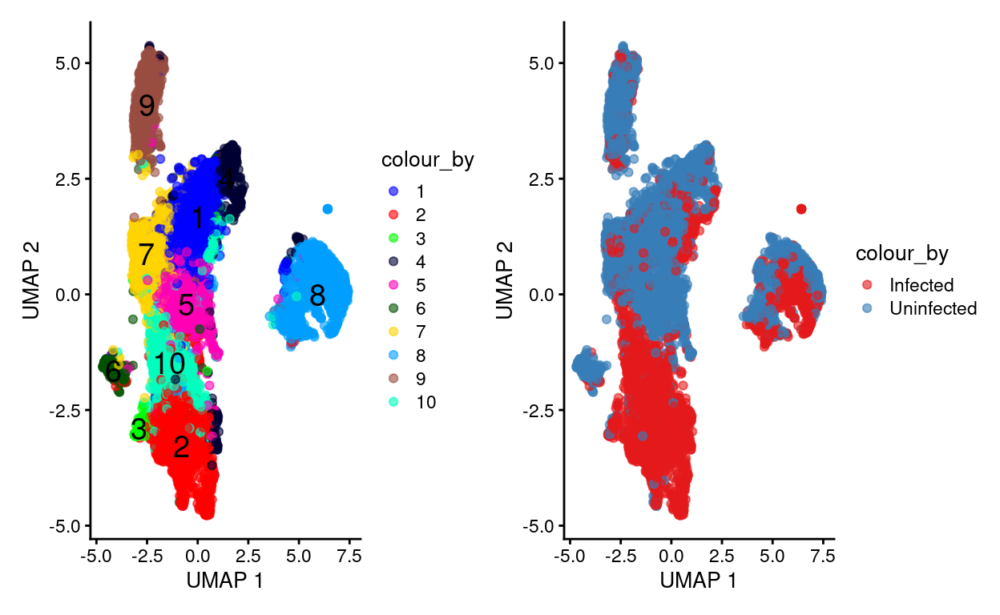
Show code
fit.ab <- glmQLFit(y.ab, design, robust=TRUE, abundance.trend=FALSE)
summary(fit.ab$var.prior)
Min. 1st Qu. Median Mean 3rd Qu. Max.
1.097 1.097 1.097 1.097 1.097 1.097
Show code
# NOTE: With only 2 labels this doesn't work / make sense
summary(fit.ab$df.prior)
Min. 1st Qu. Median Mean 3rd Qu. Max.
Inf Inf Inf Inf Inf Inf
Show code
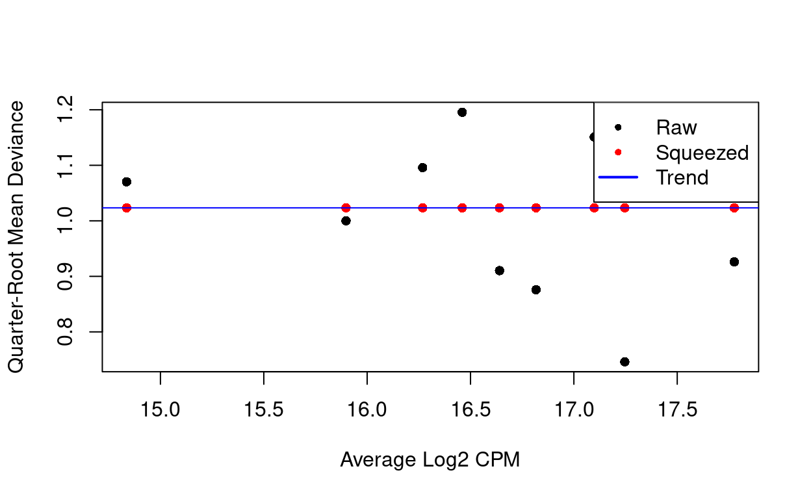
Show code
TreatmentUninfected
Down 2
NotSig 2
Up 5
Show code
Coefficient: TreatmentUninfected
logFC logCPM F PValue FDR
2 -5.0608155 17.77602 37.4339396 4.830479e-07 4.347431e-06
5 3.9487880 16.26832 24.4846606 1.759911e-05 7.919599e-05
6 3.9439823 14.83639 22.1815535 3.635058e-05 9.058258e-05
10 -3.6163947 16.81716 21.8650595 4.025893e-05 9.058258e-05
9 3.1429795 16.45985 17.0400142 2.071776e-04 3.729197e-04
1 2.7689919 17.09845 13.9027383 6.601014e-04 9.901521e-04
7 2.2977786 16.64016 9.8849535 3.331764e-03 4.283697e-03
4 0.7516523 15.89775 1.1425514 2.922290e-01 3.287576e-01
8 -0.5966428 17.24622 0.7399974 3.953546e-01 3.953546e-01
Show code
plotUMAP(sce, colour_by = "cluster", text_by = "cluster") +
scale_colour_manual(values = cluster_colours) +
plotUMAP(sce, colour_by = "Treatment") +
scale_colour_manual(values = treatment_colours)
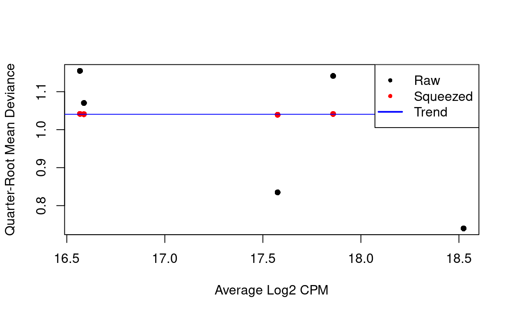
Show code
# DA analysis using subcluster labels in non-cycling clusters ------------------
tmp <- list_of_sce$`Not cycling`
abundances <- table(tmp$subcluster, tmp$Sample)
abundances <- unclass(abundances)
abundances
infected_1 infected_2 infected_3 uninfected_1
Not cycling.1 32 3 14 247
Not cycling.2 53 11 7 342
Not cycling.3 241 101 70 366
Not cycling.4 532 848 881 29
Not cycling.5 263 41 35 634
uninfected_2 uninfected_3
Not cycling.1 507 97
Not cycling.2 258 197
Not cycling.3 440 380
Not cycling.4 30 41
Not cycling.5 459 577
Show code
Mode TRUE
logical 5
Show code
Min. 1st Qu. Median Mean 3rd Qu. Max.
0.3614 0.3614 0.3614 0.3614 0.3614 0.3614
Show code

Show code
fit.ab <- glmQLFit(y.ab, design, robust=TRUE, abundance.trend=FALSE)
summary(fit.ab$var.prior)
Min. 1st Qu. Median Mean 3rd Qu. Max.
1.172 1.172 1.172 1.172 1.172 1.172
Show code
# NOTE: With only 2 labels this doesn't work / make sense
summary(fit.ab$df.prior)
Min. 1st Qu. Median Mean 3rd Qu. Max.
527 527 527 527 527 527
Show code
Show code
TreatmentUninfected
Down 1
NotSig 1
Up 3
Show code
Coefficient: TreatmentUninfected
logFC logCPM F PValue FDR
Not cycling.4 -5.023154 18.52370 30.230585 2.211093e-05 0.0001105546
Not cycling.1 3.521584 16.56704 16.468650 6.140660e-04 0.0015351649
Not cycling.2 2.973155 16.58736 12.465420 2.100608e-03 0.0035010134
Not cycling.5 1.835732 17.85842 5.305937 3.211608e-02 0.0401450989
Not cycling.3 1.017014 17.57522 1.711972 2.055674e-01 0.2055674223
Show code
plotUMAP(tmp, colour_by = "subcluster", text_by = "subcluster") +
plotUMAP(tmp, colour_by = "Treatment") +
scale_colour_manual(values = treatment_colours)
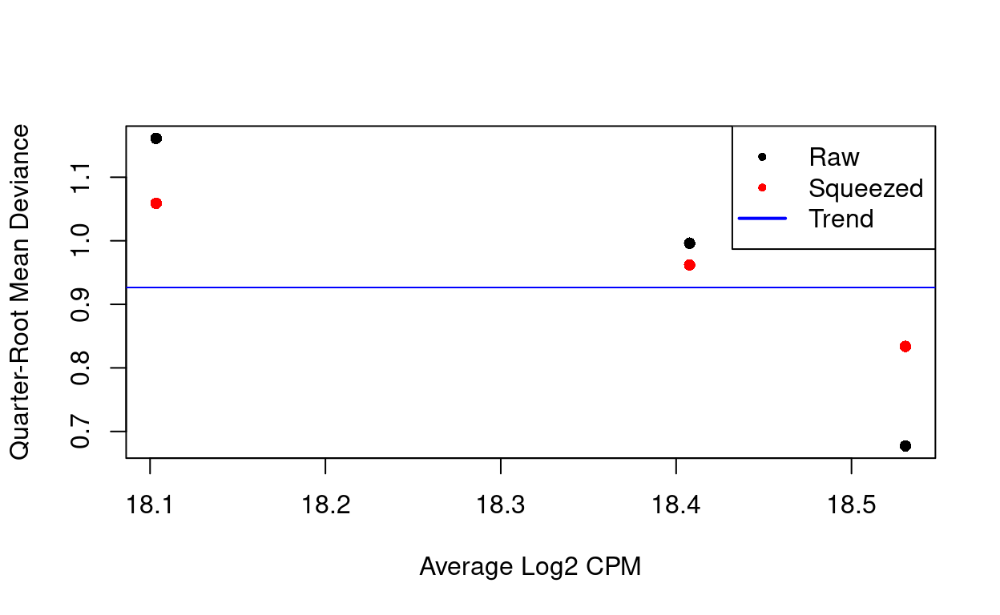
Show code
# DA analysis using subcluster labels in cycling clusters ----------------------
tmp <- list_of_sce$Cycling
abundances <- table(tmp$subcluster, tmp$Sample)
abundances <- unclass(abundances)
abundances
infected_1 infected_2 infected_3 uninfected_1
Cycling.1 73 65 147 42
Cycling.2 72 45 55 55
Cycling.3 81 61 125 74
uninfected_2 uninfected_3
Cycling.1 112 48
Cycling.2 113 43
Cycling.3 133 51
Show code
Mode TRUE
logical 3
Show code
Min. 1st Qu. Median Mean 3rd Qu. Max.
0.01332 0.01332 0.01332 0.01332 0.01332 0.01332
Show code
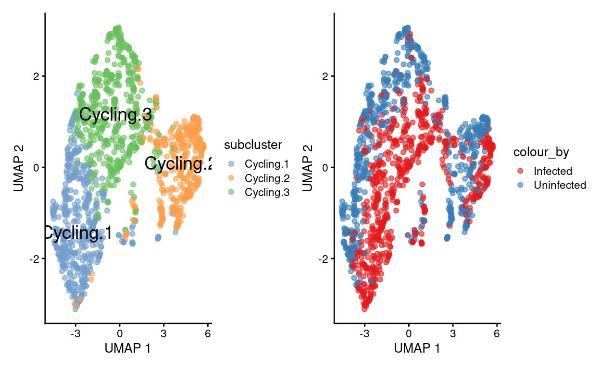
Show code
fit.ab <- glmQLFit(y.ab, design, robust=TRUE, abundance.trend=FALSE)
summary(fit.ab$var.prior)
Min. 1st Qu. Median Mean 3rd Qu. Max.
0.737 0.737 0.737 0.737 0.737 0.737
Show code
# NOTE: With only 2 labels this doesn't work / make sense
summary(fit.ab$df.prior)
Min. 1st Qu. Median Mean 3rd Qu. Max.
4.301 4.301 4.301 4.301 4.301 4.301
Show code
Show code
TreatmentUninfected
Down 0
NotSig 3
Up 0
Show code
Coefficient: TreatmentUninfected
logFC logCPM F PValue FDR
Cycling.1 -0.37303584 18.40769 4.3858873 0.06830628 0.2049188
Cycling.2 0.36603907 18.10346 2.5737606 0.14594828 0.2189224
Cycling.3 0.07503416 18.53074 0.3300273 0.63267221 0.6326722
Show code
plotUMAP(tmp, colour_by = "subcluster", text_by = "subcluster") +
plotUMAP(tmp, colour_by = "Treatment") +
scale_colour_manual(values = treatment_colours)
Show code
# TODOs ------------------------------------------------------------------------
# - [ ] Cell cycle could really be proliferation of T-cells upon activation.
# - [ ] Are samples paired?
# - [ ] Ambient RNA
# - [ ] Heatmaps and CSVs of DEGs